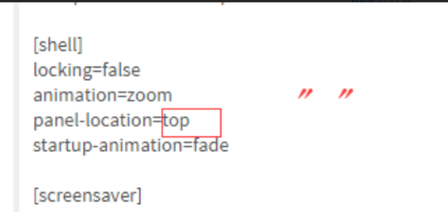
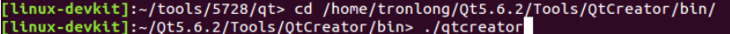
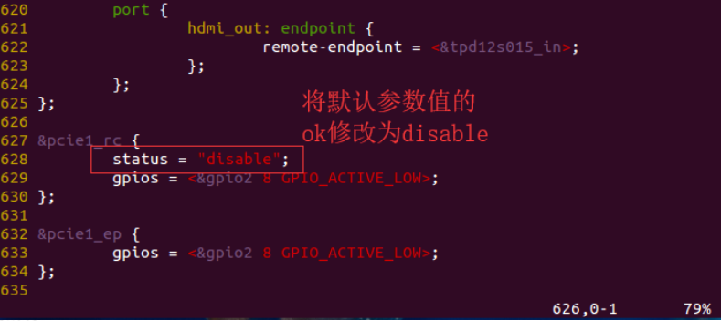

1、nfs
开发板挂载nfs服务器共享目录
#mount -t nfs -o nolock,nfsvers=3,vers=3 192.168.1.67:/home/lzc/nfs /nfs/
mount -t nfs -o nolock,nfsvers=3,vers=3 192.168.1.89:/home/develop/nfs_share /nfs/
卸载开发板的nfs挂载目录
#umount /nfs/
2、tftp
下载tftp服务器工作目录中的文件
#tftp -g -r test 192.168.1.88
上传到tftp服务器工作目录
#tftp -p -r test 192.168.1.88
3、AM5728 ti的SDK开发包下的触屏校准目前看不是tslib的方式，
使用weston-calibrator工具就行校准，和用weston方式显示相关
目前方法
rm /run/media/mmcblk0p1/ws-calibrate.rules
sync
rm /etc/udev/rules.d/ws-calibrate.rules
sync
reboot
4、显示采用weston方式，修改QT界面在weston下显示到屏幕的顶部
修改
“/etc/weston.ini”文件，将panel-location=top的参数修改为空

保存 sync，reboot重启生效
5、关闭ti自带的matrix界面
/etc/init.d/matrix-gui-2.0 stop
6、从SD卡烧写程序到emmc中，执行脚本 ./mkemmc-boot.sh --device /dev/mmcblk1（注意需要将脚本放在/opt/tools目录下，否则失败），
输入“y”确认重新分区， 按 Enter 键开始固化系统，用时 5 min 后系统固化成功。
成功固化 Linux 系统到 eMMC 后，将开发板断电， 取出 SD 系统启动卡， 拨码开关拨为 00000（1~5） 档位
7、从emmc启动后修改完文件断掉会有保存不上的情况，需要sync立即写入
8、借助ti的sdk开发包中qt环境需要
source /ti-processor-sdk-linux-am57xx-evm-03.01.00.06/linux-devkit/environment-setup
./qtcreator

9、IPC通信时查看DSP打印信息
代码中使用 Console_printf 进行打印调试
#define Console_printf System_printf
用如下指令进行查看
cat /sys/kernel/debug/remoteproc/remoteproc2/trace0
10、在Linux下连接DSP仿真器
echo "on" > /sys/bus/platform/devices/40800000.dsp/power/control
11、释放opencl共享内存的占用
pkill ti-mctd
12、BOIS驱动外设，这里指向了pcie路径举例
13、rtos_sdk环境变量的设置
export PATH=$PATH:/home/lzc/am5728/linux_sdk/linux-devkit/sysroots/x86_64-arago-linux/usr/bin
export SDK_INSTALL_PATH=/home/lzc/am5728/rtos_sdk
export PROC_SDK_INSTALL_PATH=/home/lzc/am5728/rtos_sdk/processor_sdk_rtos_am57xx_3_01_00_06
export TOOLS_INSTALL_PATH=/home/lzc/ti
source /home/lzc/am5728/rtos_sdk/processor_sdk_rtos_am57xx_3_01_00_06/setupenv.sh
linux的SDK下 Rules.make中 添加
#Points to the root of the TI SDK
export TI_SDK_PATH=/home/lzc/am5728/linux_sdk
export TI_RTOS_PATH=/home/lzc/am5728/rtos_sdk
14、DSP作为pcie的RP端时候
默认情况下 Linux 内核启动后会初始化 PCIe 外设，当 DSP 核上运行的 RTOS 系统需要
再次对 PCIe 进行初始化时， 此时会出现不稳定的情况，因此关闭 ARM 端对 PCIe 的初始
化是比较好的选择。
修改 Linux 内核"arch/arm/boot/dts/am57xx-beagle-x15-common.dtsi"设备树源文件， 将"pcie1_rc"的 status 参数值修改为"disable"
没有就添加
&pcie1_rc {
status = "disable";
};
&pcie1_ep {
status = "disable";
};

修改完成后，重新编译生成对应平台的 dtb 文件，并将新生成的 dtb 文件替换掉开发
板 SD 启动卡文件系统 boot 分区下的同名文件。
15、制作SD卡镜像
sudo fdisk -l
sudo ./mksdboot.sh --device /dev/sdb
16、制作补丁与打补丁
#diff –ruN src_old src_new > src.patch
#patch -p1 -d src < src.patch
17、查看温度
cat /sys/class/hwmon/hwmon1/temp1_input